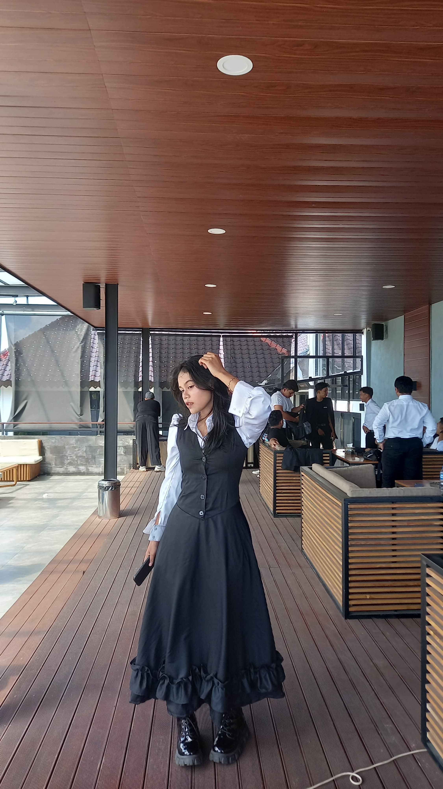

Welcome to My Profile
This is an introduction about myself and my interests.
Halo, perkenalkan nama saya Fadhila Dwi Lestari. Saya berasal dari Yogyakarta. Saat ini, saya adalah seorang mahasiswa di Uniiversitas Teknologi Yogyakarta dari prodi informatika. Tentunya saya memiliki keahlian dalam membuat kodingan tetapi untuk saat ini saya baru menguasai bahasa python dan html. Pada gambar di bawah saya mencantumkan potongan kodingan dari projek-projek yang saya buat. Salah satunya projek programm aplikasi pemesanan tiket trasportasi, disana saya sudah membuat banyak fitur, di antaranya: login dan logout, signup, memesan tiket, melihat tiket, pilihan menu admin dan pengguna, fitur admin(menghapus, mengedit, dan menambahkan). Saya juga pernah membuat projek pembuatan web untuk coffe shop menggunakan bahasa html. Pada web yang saya buat sudah memiliki banyak fitur walau belum 100% lengkap, diantaranya: login, signup, memilih pesanan, menambahkan pesanan, melihat pesanan, dan juga menghapus pesanan. Untuk bahasa html, saya masih merasa kurang dan saya akan berusaha untuk mempelajarinya agar dapat terus mempermudahkanku untuk membuat kodingan.
Selain membuat kodingan, saya juga memliki kelebihan dalam mendesain dan mengambar dengan tools gambar seperti ibispaintx, pensil, bolpoint, cat dengan kanvas. Tetapi dari banyaknya tools gambar yang saya gunakan, saya lebih menguasai tools gambar dengan cat aqrilik dan kanvas. Walau tools yang saya gunakan sudah banyak, tetapi saya selalu mempunyai keinginan untuk mencoba tools baru seperti cat minyak, atau melukis di kayu, memahat dll. Saya juga memiliki keinginan untuk terus mengembangkan keahlian saya dengan terus berlatih dan mencoba. Saya juga suka mencoba sesuatu yang baru dan menarik. Saya tidak mudah menyerah, saya suka saat memiliki kesulitan entah itu saat membuat kodingan atau mengambar. Setelah saya melewati tahap itu, saya suka rasanya saat saya berhasil melewatinya dan saya juga sadar skillku meningkat, karena itu saya menyukainya.
Berikut ini karya dari keahlian saya:
Berikut ini gambaran kodingan dari projek saya:
Contact
Connect with me on LinkedIn
fadhiladwi016@gmail.com
Phone
Contact me via phone: 089687037032